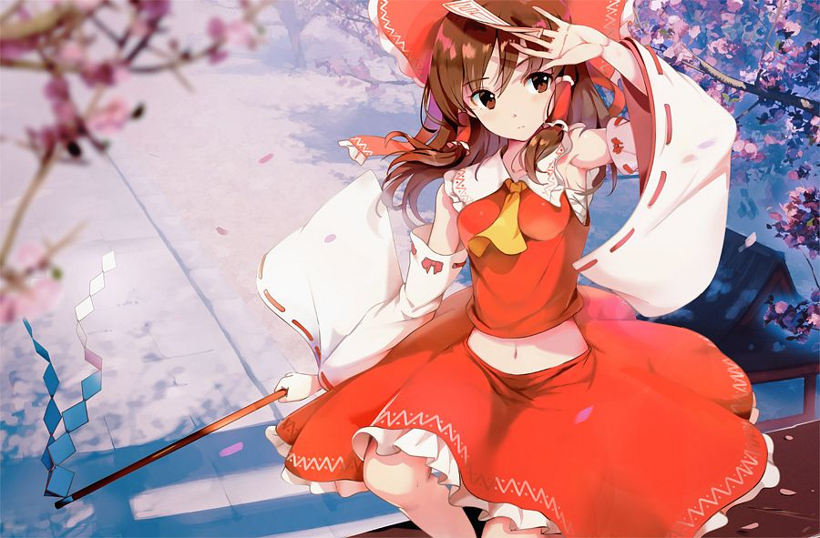
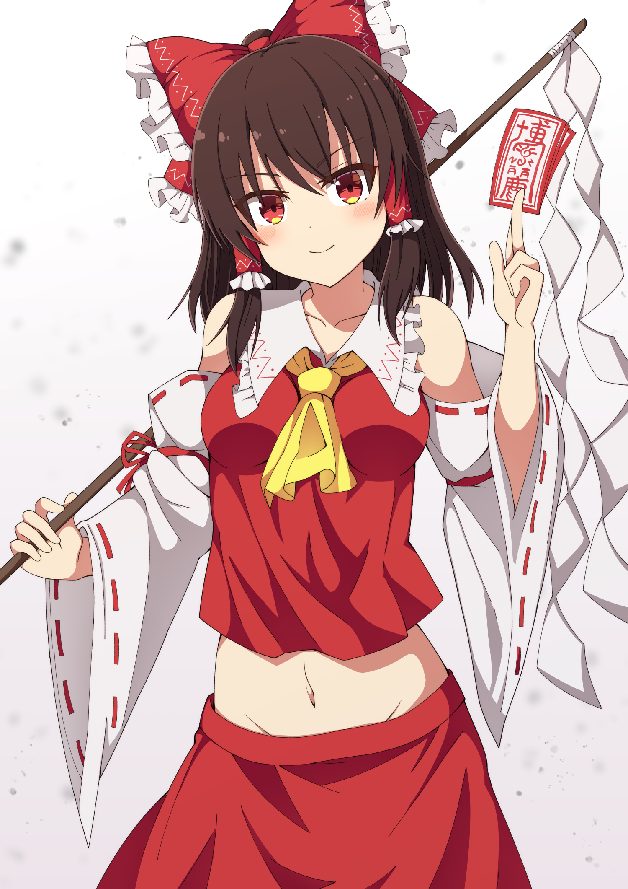
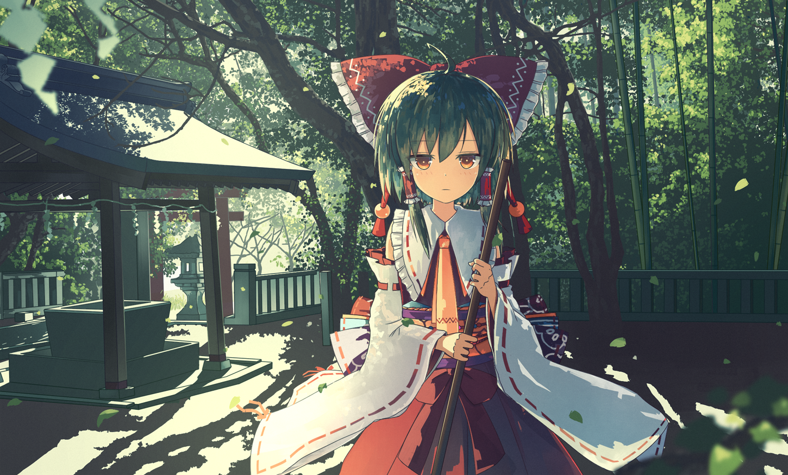

Reimu Hakurei (博麗 霊夢 Hakurei Reimu) is the main protagonist of the Touhou Project series along with the deuteragonist,
Marisa Kirisame. As the shrine maiden of the Hakurei Shrine, she manages the Hakurei Border of Gensokyo and exterminates troublesome youkai.
Reimu Hakurei (博麗 霊夢 Hakurei Reimu) is the Main Character of the Touhou Project series, having appeared in all of
the main games and in almost every game in the series. As the sole maiden of the Hakurei Shrine, she is commonly
called upon (or calls it upon herself) to investigate strange occurrences throughout Gensokyo.
In earlier games, Reimu's spiritual abilities were highly limited. (In Highly Responsive to Prayers, she
was unable to directly harm enemies at all.) As time passed, however, she developed her abilities, becoming
able to manipulate the Hakurei Yin-Yang Orb, special amulets, and her own spiritual power to fight more effectively.
Sometime between Mystic Square and Embodiment of Scarlet Devil, she realized the ability to fly under her own
jurisdiction. (Before then, she relied on Genjii, her turtle familiar, to fly.)
Reimu is commonly described as easygoing, curious, dutiful, and optimistic — sometimes overly so.
Her personality seems sympathetic toward many individuals; there are few characters who remain her
rivals past the first encounter. Her shrine has become a moderately popular locale for some of
Gensokyo's residents.


